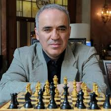
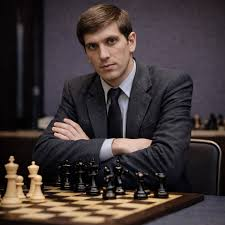
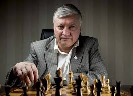

Magnus Carlsen
Magnus Carlsen es uno de los mejores jugadores de ajedrez de la historia moderna. Ha sido campeón mundial y es conocido por su gran capacidad para jugar finales y su estilo universal.
Su habilidad para adaptarse a cualquier tipo de posición lo ha convertido en un referente del ajedrez actual.

Garry Kasparov
Garry Kasparov fue campeón mundial durante muchos años y es considerado uno de los mejores jugadores de todos los tiempos.
Destacó por su estilo agresivo y su profunda preparación en aperturas.

Bobby Fischer
Bobby Fischer fue un jugador excepcional que revolucionó el ajedrez en el siglo XX.
Su victoria en el campeonato mundial tuvo un gran impacto histórico y popularizó el ajedrez en todo el mundo.

Anatoly Karpov
Anatoly Karpov fue campeón mundial y es conocido por su estilo posicional y preciso.
Su capacidad para controlar la partida y aprovechar pequeños errores del rival lo convirtió en uno de los jugadores más consistentes de la historia.